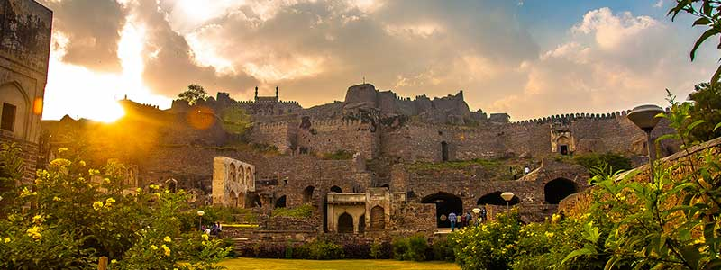
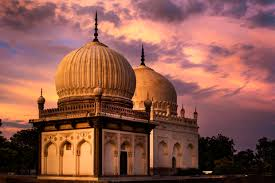

Historical places have a unique charm of their own. They not only provide a glimpse into the rich historical past, but they also represent the great achievements made in art and architecture. And the best part is that there is no dearth of such places in Telangana. In fact, no matter what part of the state you go to, you will find a city that boasts several interesting historical place.
One such city that is famous for its historical places is Hyderabad. Popularly referred to as the ‘City of Nizams’, Hyderabad has a rich historical legacy and is replete with historical places that provide magnificent memories.

The Charminar , constructed in 1591, is a monument and mosque located in Hyderabad. The landmark has become known globally as a symbol of Hyderabad and is listed among the most recognized structures in India. It has also been officially incorporated as the Emblem of Telangana for the state of Telangana. The Charminar's long history includes the existence of a mosque on its top floor for more than 400 years. While both historically and religiously significant, it is also known for its popular and busy local markets surrounding the structure, and has become one of the most frequented tourist attractions in Hyderabad. Charminar is also a site of numerous festival celebrations, such as Eid-ul-adha and Eid al-Fitr.
The fifth ruler of the Qutb Shahi dynasty, Muhammad Quli Qutb Shah, built the Charminar in 1591 after shifting his capital from Golkonda to the newly formed city of Hyderabad.The Charminar was constructed at the intersection of the historical trade route that connects the markets of MUSHEERABAD with the port city of MACHI MARKET.The Old City of Hyderabad was designed with Charminar as its centerpiece. The city was spread around the Charminar in four different quadrants and chambers, segregated according to the established settlements. Towards the north of Charminar is the Char Kaman, or four gateways, constructed in the cardinal direction. Additional eminent architects from Persia were also invited to develop the city plan. The structure itself was intended to serve as a Mosque and Madarsa. It is of Indo-Islamic architecture style, incorporating Persian architectural elements.
Golconda Fort, also known as Golkonda is a fortified citadel and an early capital city of the Qutb Shahi dynasty (c.1512–1687), located in Hyderabad. Because of the vicinity of diamond mines, especially Kollur Mine, Golconda flourished as a trade centre of large diamonds, known as the Golconda Diamonds. The region has produced some of the world's most famous diamonds, including the colourless Koh-i-Noor, the blue Hope, the pink Daria-i-Noor, the white Regent, the Dresden Green, and the colourless Orlov , Nizam and Jacob , as well as the now lost diamonds Florentine Yellow, Akbar Shah and Great Mogul.
Golconda was originally known as Mankal. Golconda Fort was first built by the Kakatiyas as part of their western defenses along the lines of the Kondapalli Fort. The city and the fortress were built on a granite hill that is 120 meters high, surrounded by massive battlements. The fort was rebuilt and strengthened by Rani Rudrama Devi and her successor Prataparudra. Later, the fort came under the control of the Kamma Nayakas, who defeated the Tughlaqi army occupying Warangal. It was ceded by Kamma king Musunuri Kapaya Nayaka to the Bahmani Sultanate as part of a treaty in 1364.
Chowmahalla Palace or Chowmahallat is the palace of the Nizams of Hyderabad State in Hyderabad. It was the seat of the Asaf Jahi dynasty and was the official residence of the Nizams of Hyderabad while they ruled their state. The palace was built by Nizam Salabat Jung.The palace remains the property of Barkat Ali Khan Mukarram Jah, heir of the Nizams. Other members of the Hyderabadi Nizam family have also wed here.
While Salabat Jung initiated its construction in 1750, it was completed by the period of Afzal ad-Dawlah, Asaf Jah V between 1857 and 1869.The palace is unique for its style and elegance. Construction of the palace began in the late 18th century and over the decades a synthesis of many architectural styles and influences emerged. The palace consists of two courtyards as well as the grand Khilwat, fountains and gardens. The palace originally covered 45 acres, but only 12 acres remain today.The palace was restored between 2005 and 2010 under the patronage of Princess Esra.

The Qutb Shahi Tombs are located in the Ibrahim Bagh (garden precinct), close to the famous Golconda Fort in Hyderabad. They contain the tombs and mosques built by the various kings of the Qutb Shahi dynasty. The galleries of the smaller tombs are of a single storey while the larger ones are two storied. In the centre of each tomb is a sarcophagus which overlies the actual burial vault in a crypt below. The domes were originally overlaid with blue and green tiles, of which only a few pieces now remain.
During the Qutb Shahi period, these tombs were held in great veneration. But after their reign, the tombs were neglected until Sir Salar Jung III ordered their restoration in the early 19th century. A garden was laid out, and a compound wall was built. Once again, the tomb-garden of the Qutb Shahi family became a place of serene beauty. All except the last of the Qutb Shahi sultans lie buried here.Sultan Quli Qutb Mulk's tomb, the style of which sets the example for the tombs of his descendants, is on an elevated terrace measuring 30 meters in each direction. The tomb chamber proper is octagonal, with each side measuring around 10 meters. The entire structure is crowned by a circular dome. There are three graves in this tomb chamber and twenty-one laid out on the surrounding terrace, all of which lack inscription except for the main tomb. The inscription on Sultan Quli's tomb is in three bands, in the Naskh and Tauq scripts. The inscription refers to Sultan Quli as Bade Malik — the endearing term by which all people of the Deccan used for him. The tomb was built in 1543 A.D. by the Sultan, during his lifetime, as was the custom.
Saidani Ma Tomb, also spelt Saidani Maa Tomb, is a tomb located in Hyderabad. It is a state protected monument of Telangana.It is located near Hussain Sagar.The tomb in Mughal and Qutb Shahi styles with elaborate stucco decorations and fretwork screens was built by Nawab Abdul Haq Diler Jung for his mother Hazrath Saidani Ma Saheba in 1883, during the reign of Asaf Jah VI.The 131-year old heritage structure is in need of restoration. The plaster on the dome and walls is peeling off leaving black patches.
Warangal Fort is located in Warangal. It was the capital city of Kakatiyas and Musunuri Kamma Nayakas. It appears to have existed since at least the 12th century when it was the capital of the Kakatiya dynasty. The fort has four ornamental gates, known as Kakatiya Kala Thoranam, that originally formed the entrances to a now ruined great Shiva temple. The Kakatiyan arch has been adopted and officially incorporated into the emblem of Telangana after the state bifurcation. The Fort is included in the "tentative list" of UNESCO World Heritage Site.
itially, Warangal was under the rule of the Yadava kings in the 8th century; in the 12th century, it came under the control of the Kakatiya dynasty. Although precise dating of its construction and subsequent enhancements is uncertain, historians and archaeologists generally agree that an earlier brick-walled structure was replaced with stone by Ganapatideva, who died in 1262, and that he was succeeded by his daughter Rudrama Devi, who ruled until 1289, and then her grandson Prataparudra II, whose reign came to be known as a "Golden Age". Twenty years later his kingdom was conquered by the Sultans of Delhi.Ganapatideva, Rudramadevi, and Prataparudra II all added to the fort's height, building gateways, square bastions, and additional circular earthen walls. This places the construction towards the end of the Kakatiya period .
Khammam Fort is a fort in the city of Khammam, Telangana, India constructed by Musunuri Nayaks. It served as an impregnable citadel during various regimes of different dynasties, including the Musunuri Nayaks, Qutb Shahi’s and Asaf Jahis. The fort was situated in a very vast area in the heart of the City of Khammam. It was notified as a protected monument by the Archaeology Department several decades ago. Despite decades of neglect, the historical edifice, which once flourished with regal opulence, presents its alluring charm due to its architectural splendor.
The Khammam Fort was built by Musunuri Nayaks. Several inscriptions were discovered in the surrounding areas of Khammam and Krishna districts of Musunuri Nayaks. Khammam slowly became an independent territory within the kingdom of Kakatiyas for Musunuri Nayaks.75 Telugu speaking feudatories of the region under the leadership of Musunuri Nayaks fought for 10 long years to unify the Telugu land and succeeded in repulsing them out of country.
Bhuvanagiri Fort is a Fort located in Bhuvanagiri, Yadadri Bhuvanagiri District, Telangana, India. This fort was ruled and renovated by Musunuri Nayaks. It is located on a huge rock at a commanding height.
The Bhongir fort adorns the place from the time it was built in 10th century. Bhongir Fort was built on an isolated monolithic rock by the Western Chalukya ruler Tribhuvanamalla Vikramaditya VI in the year 1076 and was thus named after him as Tribhuvanagiri, later it was called as Bhuvanagiri. Some of the inscriptions found in the fort were in Kannada and Telugu language highlighting the lifestyle of the people of that era. The inscriptions, the architecture and some sculptures found in the fort reveal that the fort was ruled by the Chalukya dynasty for a long time and then by the Kakatiya dynasty. The stone wall, the steps through the granite archways and the crumbling stucco ruins of the later age, still adorn the place.Somewhere in 15th century, the fort was ceded to the Bahamani Sultans and then was taken over by a local governor. The Qutb Shahis' used the fort as a prison for those who aspired to snatch their throne. During the time of the British, the fort escaped their attention and was not occupied. Bhuvanagiri was much ignored after the downfall of the Nizams at the time of communist revolution in the late 1940s.
Malwala Palace was built in 1845 and is located in Hyderabad. Malwala Palace was located along the road leading towards east from Charminar. It was constructed in Mughal and Rajasthani style and in Hyderabadi courtyard style, was known for its richly carved. wooden pavilion. Other than Raja Bhagwandas Bagh Pavilion, Malwala Palace was the only other palace in Hyderabad having a wooden pavilion. Barring the grand gateway, the entire palace complex has been demolished in August 2000 and a shopping mall has been built in its place.
The Malwalas were responsible for the revenue records of the Nizam's dominions. The palace belonged to a noble family of Dewan Chandulal, the Malwala or the custodians of the Revenue Records (Daftar -i- Mal) of the erstwhile Hyderabad State. Built in the early 18th century by the noble Sagar Mall during the reign of first nizam in 1724, this was one of the very few palaces of Hyderabad built in the Mughal and Rajasthani styles of architecture. It acquired the name Malwala as Sagar Mall was the custodian of revenue records (maal) in hyderabad state. At the time department of revenue was held by the Mathur Kayastha family or Malwala family. During the 1940s, at the time of one of the family descendants, Raja Dharam Karan, the grandeur of the palace was resplendent and was noted for its glory and power.
The Thousand Pillar Temple or Rudreshwara Swamy Temple is a historic Hindu temple located in the town of Hanamakonda. It is dedicated to Lord Shiva, Vishnu and Surya.Thousand Pillar Temple, along with Warangal Fort, Kakatiya Kala Thoranam and Ramappa Temple are added to the tentative list of World Heritage sites recognised by UNESCO.
Many Hindu temples were developed under the patronage of Ganapati Deva, Rudrama Devi and Prataparudra who were of Kakatiya dynasty. The Thousand Pillar Temple was believed to be constructed during the period between 1175–1324 CE by order of the king, Rudra Deva. It stands out to be a masterpiece and achieved major heights in terms of architectural skills by the ancient Kakatiya Vishwakarma Sthapathis(Architect).It was desecrated by the Tughlaq dynasty during their invasion of the Deccan.Rudreswara Temple locally known as Veyisthambala Gudi (Thousand pillars temple) is one of the fine and earliest available examples of Kakatiya art, architecture and sculpture. It was built by Rudra Deva, and named after him as ‘Sri Rudreswara Swamy temple with the presiding deity as Rudreswara, in 1163 AD in the style of later Chalukyan and early Kakatiyan Architecture, star-shaped and triple shrined (Trikutalaya).There are richly carved pillars, perforated screens, exquisite icons; rock cut elephants and the monolithic dolerite Nandi as components of the temple. Strengthening of foundations like sandbox technique, the skill of Kakatiya sculptors is manifest in adroit craftsmanship and flawless ivory carving technique in their art. The ingenuity of Kakatiya sculptors is visible in likes of lathe turned, and shiny polish in dolerite and granite stone sculpture and craft work of Nava Rangamandapa.

Elgandal Fort is situated amidst palm groves on the banks of the Manair River (a tributary of the Godavari River), approximately 10 kilometres (6.2 mi) from Karimnagar on the Kamareddy Road in the Indian state of Telangana. It was once under the control of the Qutub Shahi dynasty, the Mughal Empire, and the Nizams of Hyderabad. During the Nizam era it was the headquarters of Karimnagar. It is believed that a secret tunnel connects Elgandal Fort and Manakondur.
Originally known as Veligundula, Elgandal is a hillfort built during the Kakatiya dynasty (1083–1323) and served as a stronghold for the warrior Musunuri Nayaks. The Qutb Shahi dynasty occupied the fort in the 16th century and posted Quinamul Mulk as commander. Subsequently, it fell under the administrative control of the Mughal Empire. Amin Khan was appointed as Khiledar of Elagandal during the reign of Nizam of Hyderabad Asaf Jah I (r. 1724–1748) followed by Muqarrab Khan. Mirza Ibrahim dhamsa became Khiledar during the reign of Nawab Salabat Jung. Dhamsa rebuilt and strengthened the fort in 1754 during the reign of Sikandar Jah (r.1803-1823). Bahadur Khan and Karimuddin served as Khiledars.While reorganizing the districts, the Sixth Nizam, Mir Mahbub Ali Khan, shifted the District Headquarters from Elagandal to Karimnagar in 1905.Elgandal's rulers surrounded the fort with a crocodile filled moat of around 5 metres (16 ft) wide and 4 metres (13 ft) deep to prevent enemy incursions.The site also houses a mosque and an eidgah, the designated place for special Eid prayers.
The Ramagiri Fort, also known as Ramagiri Khilla, located over a mountain top, is in the Peddapalli district .In ramagiri khilla the Hanuman statue was constructed by Gaddam Bapu from mancherial district. The family member will visit every year and make pray and worship for lord Hanuman. And recent year the family also established lord nagula statue near putta on top of mountain.
The fort was built in the 12th century by the Kakatiyas of Warangal. Later, it was controlled by the Qutub Sahi Sultanate from 1518 to 1687. In 1656, the ruler of Golconda, Abdullah Qutb Shah, gave the fort to his son-in-law, one of Aurangzeb's sons. The fort came under the control of the British Raj in 1791. Tradition has it that Kalidasa, one of the greatest Sanskrit poets, was motivated to compose his Meghadūta, a lyrical poem, by the Ramagiri Fort; however, Kalidasa is thought to have lived in the fifth century CE, well before the fort's construction.

The Salar Jung Museum is an art museum located at Dar-ul-Shifa, on the southern bank of the Musi River in the city of Hyderabad. It is one of the three National Museums of India. Originally a private art collection of the Salar Jung family, it was endowed to the nation after the death of Salar Jung III. It was inaugurated on 16 December 1951.It has a collection of sculptures, paintings, carvings, textiles, manuscripts, ceramics, metallic artifacts, carpets, clocks, and furniture from Japan, China, Burma, Nepal, India, Persia, Egypt, Europe, and North America. It is one of the largest museums in the world
A nobleman of the Salar Jung family of Hyderabad, Nawab Mir Yousuf Ali Khan, Salar Jung III (1889–1949) served as Prime Minister of Hyderabad during the Nizam's rule. He spent a substantial amount of his income, over a period thirty-five years, collecting artefacts from all across the world.A nobleman of the Salar Jung family of Hyderabad, Nawab Mir Yousuf Ali Khan, Salar Jung III (1889–1949) served as Prime Minister of Hyderabad during the Nizam's rule. He spent a substantial amount of his income, over a period thirty-five years, collecting artefacts from all across the world.

Falaknuma is a palace in Hyderabad. It originally belonged to the Paigah family, and was later owned by the Nizam of Hyderabad. It is on a hillock and covers a 32-acre (13 ha) area in Falaknuma, 5 kilometres from Charminar.It was built by Nawab Sir Viqar-ul-Umra, Prime Minister of Hyderabad and the uncle & brother-in-law of the sixth Nizam. Falak-numa means "Like the Sky" or "Mirror of Sky" in Urdu.
Sir Viqar-ul-Umra, the Prime Minister of Hyderabad, after a visit to Europe, decided to build a European styled residence for himself. The foundation stone for the construction was laid by Sir Vicar on 3 March 1884. It took nine years to complete the construction and furnish the palace. Sir Vicar moved into the Gol Bangla and Zanana Mahel of the Falaknuma Palace in December 1890 and closely monitored the finishing work at the Mardana portion.He used the palace as his private residence until the palace was handed over to the 6th Nizam of Hyderabad around 1897–1898.The palace was built and furnished at a cost of four million rupees, which necessitated borrowing money from the Bank of Bengal. In the spring of 1897, the sixth Nizam of Hyderabad, Mir Mahbub Ali Khan was invited to stay at the palace. He extended his stay to a week, then a fortnight, and then a month, which prompted Sir Viqar to offer it to him. The Nizam accepted but paid some of the value of the palace; the Paigah family maintains that around 20 lakh rupees was paid.The Nizam used the palace as a guest house for the royal guests visiting the kingdom of Hyderabad. The list of royal visitors included King George V, Queen Mary, Edward VIII and Tsar Nicholas II. The palace fell into disuse after the 1950s. The last important guest was the President of India, Rajendra Prasad, in 1951.